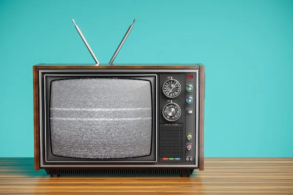

Comunicação Pré-Histórica e o Surgimento da Linguagem
Há milhares de anos, quando nossos ancestrais viviam nas primeiras comunidades humanas, a comunicação era
muito diferente do que é hoje. Naquele tempo, as palavras e as línguas como as conhecemos hoje não existiam.
Imagine um cenário em que a sobrevivência dependia da capacidade de se fazer entender sem usar palavras. Gestos,
como apontar para algo desejado, eram usados para mostrar necessidades, enquanto expressões faciais transmitem
emoções como felicidade, tristeza ou medo. Além disso, sons primitivos eram usados para alertar sobre perigos ou
expressar dor.
O desenvolvimento da linguagem vocal não apenas aprimorou a comunicação cotidiana, mas também teve um profundo
impacto na forma como as sociedades evoluíram. Com a linguagem, histórias, mitos, técnicas de caça, receitas e
rituais podiam ser transmitidos oralmente de geração em geração. Isso significava que a sabedoria acumulada ao
longo do tempo não se perdia, mas era preservada.
Além disso, a linguagem possibilitou a formação e a disseminação de culturas. Ideias, valores e tradições podiam
ser compartilhados e preservados com precisão. A transição da comunicação não-verbal para a linguagem vocal
abriu novas oportunidades para a colaboração, o compartilhamento de informações e o desenvolvimento cultural.
Foi o ponto de partida para a incrível jornada que nos levou à complexidade dos meios de comunicação que temos
hoje.
Realidade Virtual e Aumentada na Comunicação
Por volta de 3200 a.C., a humanidade testemunhou um avanço monumental na comunicação: a invenção da escrita.
Essa conquista revolucionária permitiu que as sociedades gravassem e transmitissem informações de maneira muito
mais eficaz do que nunca antes.
Os sumérios, que habitavam a região da Mesopotâmia (atual Iraque), foram os pioneiros na criação da escrita
cuneiforme. Esse sistema envolvia a utilização de tabuletas de argila fresca, nas quais os escribas escreviam
símbolos em forma de cunha usando um estilete. Após a secagem, as tabuletas tornavam-se registros duradouros.
Inicialmente, a escrita cuneiforme era usada para fins administrativos e contábeis, mas rapidamente se expandiu
para incluir registros históricos, literatura e muito mais.
Hieróglifos Egípcios: Imagens que Contam Histórias
Os sumérios, que habitavam a região da Mesopotâmia (atual Iraque), foram os pioneiros na criação da escrita
cuneiforme. Esse sistema envolvia a utilização de tabuletas de argila fresca, nas quais os escribas escreviam
símbolos em forma de cunha usando um estilete. Após a secagem, as tabuletas tornavam-se registros duradouros.
Inicialmente, a escrita cuneiforme era usada para fins administrativos e contábeis, mas rapidamente se expandiu
para incluir registros históricos, literatura e muito mais.
Telegrafia e a Comunicação a Longa Distância
No século XIX, a evolução dos meios de comunicação deu mais um passo significativo com o surgimento da
telegrafia, uma tecnologia que possibilitou a comunicação instantânea a longas distâncias. Samuel Morse, um
inventor e artista norte-americano, desempenhou um papel fundamental nesse avanço, criando o famoso código
Morse, um sistema de comunicação por meio de pulsos elétricos codificados.
O código Morse permitiu que mensagens fossem transmitidas de forma rápida e eficaz por fios elétricos. Cada
letra e número tinha sua própria sequência de pontos e traços, tornando possível codificar e decodificar
informações de maneira relativamente simples
Rádio e a Era da Comunicação Sonora
Figuras geniais como Guglielmo Marconi e Nikola Tesla desempenharam papéis fundamentais na transformação da
teoria da transmissão de sinais de rádio em uma realidade prática. Esse avanço tecnológico abriu caminho para a
comunicação sonora à distância, introduzindo uma nova dimensão na forma como as pessoas se conectam e recebem
informações.
Uma das características mais notáveis do rádio era sua capacidade de transmitir som em tempo real pelo ar. Pela
primeira vez na história, as pessoas podiam ouvir a voz de outras pessoas e sons de eventos que estavam
ocorrendo em locais distantes. Uma das primeiras aplicações do rádio foi a transmissão de notícias e
informações. As estações de rádio podiam relatar eventos importantes, como guerras, eleições e desastres
naturais, mantendo o público informado de maneira rápida e eficaz.
A capacidade de comunicação sonora à distância também teve um impacto significativo nas relações internacionais.
As transmissões de rádio podiam atravessar fronteiras e oceanos, permitindo que nações se comunicassem e
compartilhassem suas culturas e ideias com o mundo.
Televisão e a Revolução Visual

Uma das características mais marcantes da televisão era a capacidade de transmitir imagens em movimento. Pela
primeira vez, as pessoas podiam ver eventos e histórias se desenrolando diante de seus olhos, em vez de apenas
ouvir ou ler sobre eles. Os telejornais levaram notícias atualizadas diretamente para os lares das pessoas,
permitindo que elas acompanhassem eventos nacionais e internacionais em tempo real.
A capacidade da televisão de transmitir imagens teve um impacto profundo na cultura popular. Programas de
variedades, séries de televisão, programas de entrevistas e transmissões de eventos esportivos se tornaram parte
integrante da vida das pessoas. A televisão também desempenhou um papel fundamental na educação e na
conscientização. Documentários e programas educacionais trouxeram conhecimento e informações importantes para um
público amplo. Além disso, a televisão foi usada como uma ferramenta poderosa para conscientizar sobre questões
sociais e políticas, dando voz a movimentos de direitos civis, ambientais e outros.
Computadores e a Era Digital
A internet, em particular, desempenhou um papel central nessa revolução. Ela permitiu que pessoas de todos os
cantos do mundo se conectassem instantaneamente, transcendendo barreiras geográficas e culturais. O surgimento
da World Wide Web (WWW) tornou possível compartilhar informações, ideias e culturas de maneira sem precedentes.
A comunicação digital tornou-se uma parte integral da vida cotidiana, e sua onipresença moldou a forma como
interagimos com o mundo.
Uma das transformações mais notáveis foi o surgimento das redes sociais. Plataformas como Facebook, Twitter,
Instagram e LinkedIn permitiram que as pessoas se conectassem com amigos, familiares e colegas de trabalho,
independentemente de sua localização geográfica. Isso criou novas formas de relacionamentos e comunidades
online, onde as pessoas podiam compartilhar suas vidas, interesses e opiniões.
O e-mail também desempenhou um papel crucial na comunicação digital. Tornou-se uma ferramenta essencial para
comunicação pessoal e profissional. Além disso, o streaming de vídeo revolucionou a maneira como consumimos
conteúdo visual. Plataformas como YouTube, Netflix e Twitch permitem que as pessoas assistam a vídeos e
transmissões ao vivo em tempo real, expandindo o alcance da comunicação audiovisual.
A era digital também trouxe novas oportunidades para a educação e a conscientização. Cursos online, webinars e
recursos educacionais acessíveis a todos têm o potencial de democratizar o conhecimento. Além disso, a internet
tornou possível o ativismo online, permitindo que movimentos sociais e causas importantes alcancem públicos
globais e conscientizem sobre questões críticas.
No entanto, a revolução digital também trouxe desafios, como questões de privacidade e segurança online, o
impacto nas relações sociais e o poder das plataformas de tecnologia sobre o discurso público.